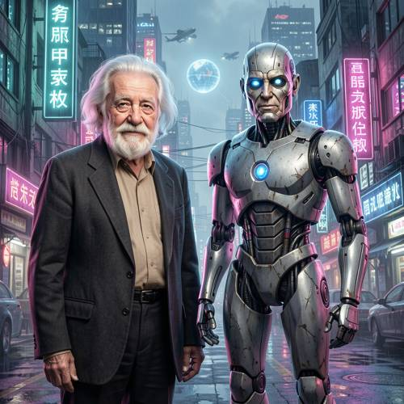
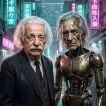

World Knowledge — Please generate an image: Against a cyberpunk-style background, the re
Please generate an image: Against a cyberpunk-style background, the real physicist Einstein stands side by side with a robot similar to him, but the appearance of the robot is older than the real person.

Direct — one call, no iterationContinuum — Kimi K3 + FLUX.2-klein-9B
Judge — Direct
PASSWorld Knowledge — The image features an elderly man with white hair, a white mustache, and a beard, whose facial features and hairstyle strongly resemble popular depictions of the physicist Albert Einstein.
FAILRelationship - Similarity — The robot has a humanoid face with an aged and weathered appearance. However, there is no distinct similarity in the facial structure or features between the robot and the man who resembles Einstein.
PASSCompound - Imagination — The image shows a man who looks like Albert Einstein standing side-by-side with a humanoid robot, which is an imaginative scene that could not happen in reality.
PASSStyle — The background consists of a dark, rainy city street flanked by tall buildings with glowing neon signs written in Asian characters, and flying vehicles in the sky. This aesthetic is characteristic of the cyberpunk style.
FAILRelationship - Comparison — The man in the image appears to be elderly. The robot also has an aged appearance, with a weathered and lined face. However, it is not visually clear that the robot looks older than the man; both subjects appear to be of a similar advanced age.
Judge — Continuum
PASSWorld Knowledge — The image features a man on the left who strongly resembles the physicist Albert Einstein, with his characteristic white hair, mustache, and facial features.
PASSRelationship - Similarity — To the right of the human figure stands a robot. The robot has a humanoid head with facial features and white hair that are designed to look similar to the Einstein figure beside it.
PASSCompound - Imagination — The image depicts the historical figure Albert Einstein standing next to a humanoid robot, a scene that is impossible and imaginative.
PASSStyle — The background is a dark, rainy city street illuminated by numerous bright neon signs with Asian characters and a holographic display, which are characteristic elements of the cyberpunk style.
PASSRelationship - Comparison — The human figure, representing Einstein, is an old man. The robot next to him has a more aged and decrepit appearance, with a heavily wrinkled, sunken face and a rusted, worn metallic body, making it look older and more weathered than the human.
What the agent did
Thinking
We need need generate image. Need interpret request. Cyberpunk background, real physicist Einstein side by side with robot similar to him, robot appears older than real person. Need image perhaps photorealistic? "real physicist Einstein" likely likeness Albert Einstein. Allowed public figure deceased. Need use flux2-klein fixed. Need mark best after generation. Need perhaps not set seed, size harness controlled? User didn't ask dimensions, but benchmark policy says don't set seed, sizes controlled by harness. So omit width height too? Tool default 1024, but "Do not set a seed. Sizes and seeds controlled by harness." likely omit seed and perhaps width/height. Need generate. Prompt with details: cinematic photorealistic portrait, cyberpunk neon city lab backdrop, Albert Einstein side by side with humanoid robot resembling him, robot visibly older, maybe weathered antique copper, deeper worn features, grey wires? Real Einstein likely middle-aged? "appearance robot older than real person": Real person perhaps late-50s recognizable, robot more ancient, rusted, stooped, deeper wrinkles in synthetic skin, aged hair. They stand side by side. Avoid text. Need generation then inspect mentally. Let's call.
Step 1 — `generate_image`
{
"model": "flux2-klein",
"prompt": "Cinematic photorealistic portrait of Albert Einstein standing side by side with a humanoid robot modeled after his face. Einstein is the recognizable real-life physicist in his late middle age, with wild silver-white hair, a thick mustache, expressive eyes, and a dark tailored suit. The robot beside him resembles Einstein but looks clearly older and more ancient: weathered synthetic skin, deeper facial creases, tarnished brass and steel components, oxidized joints, frayed gray artificial hair, and a slightly stooped posture. Both face forward, close together at waist-up scale. Behind them, a dense cyberpunk city laboratory glows with neon cyan and magenta signs, holographic circuitry, rain-slick metal surfaces, steam, and dramatic rim lighting. Sharp focus on both faces, detailed textures, no text, no extra people."
}
Result img_0

Thinking
We need inspect. Image is pretty good. However prompt said no text, but signs include gibberish text. User didn't forbid text. Real Einstein recognizable. Robot older. Need mark best. Could maybe robot is more elderly but very similar. Background cyberpunk. Need perhaps no need edit. Mark best.
Step 2 — `mark_best`
{
"image": "img_0",
"reason": "The image clearly shows Albert Einstein beside an older, weathered humanoid robot resembling him, with a strong neon cyberpunk setting and both subjects in sharp focus."
}
Thinking
Need final concise maybe image is in tool output? We should say generated and marked.
Model
Generated the image of Albert Einstein standing beside an older, weathered robotic counterpart in a neon cyberpunk setting.